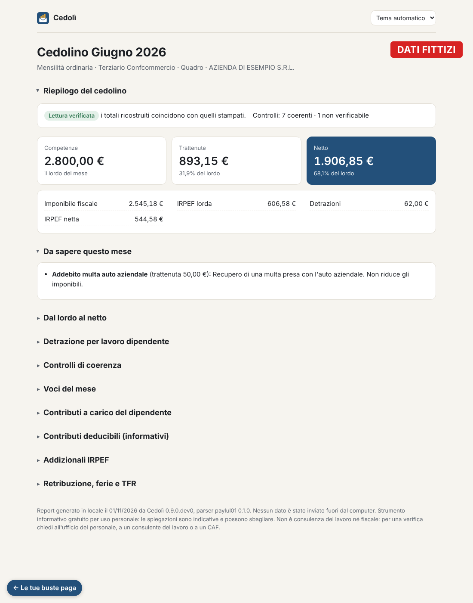
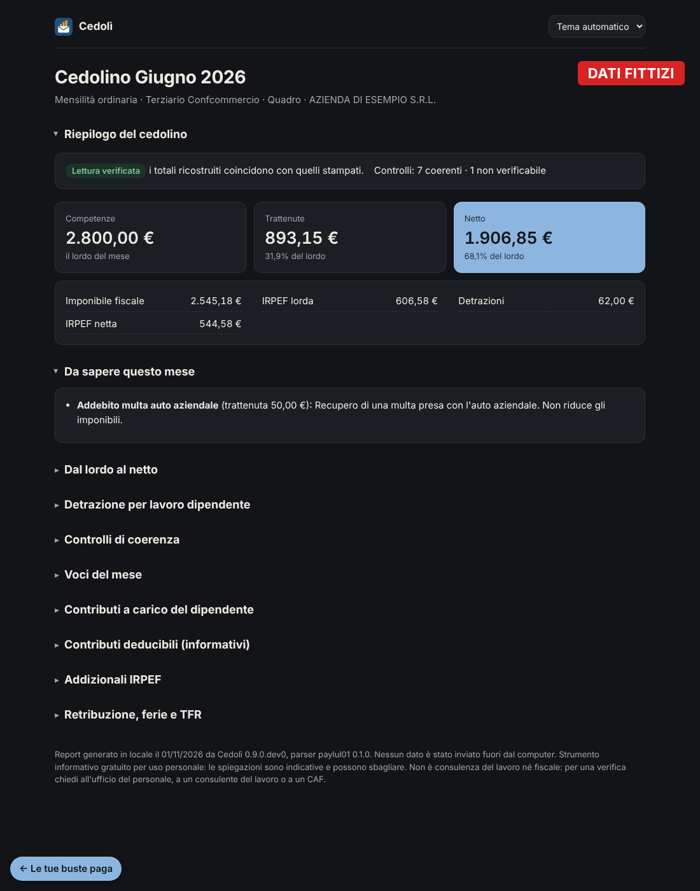
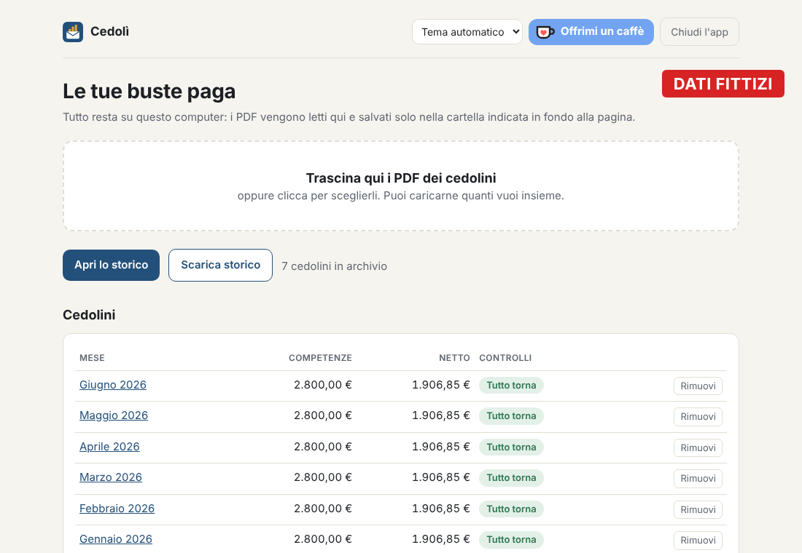
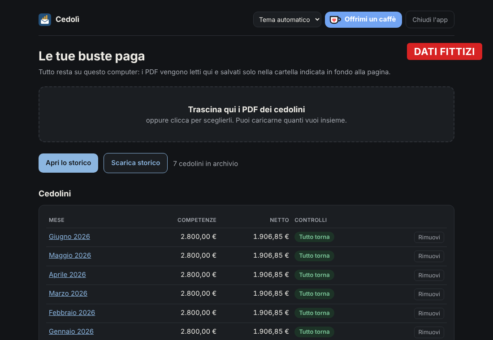
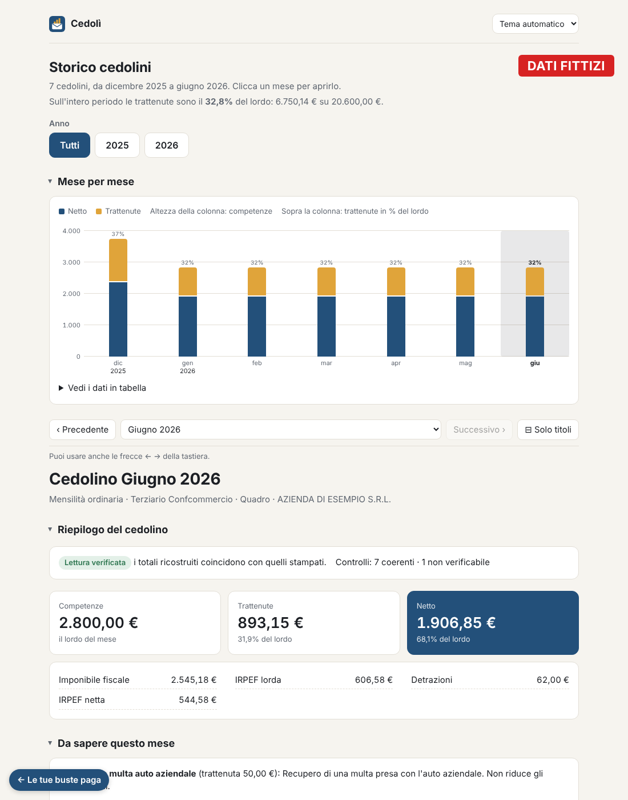
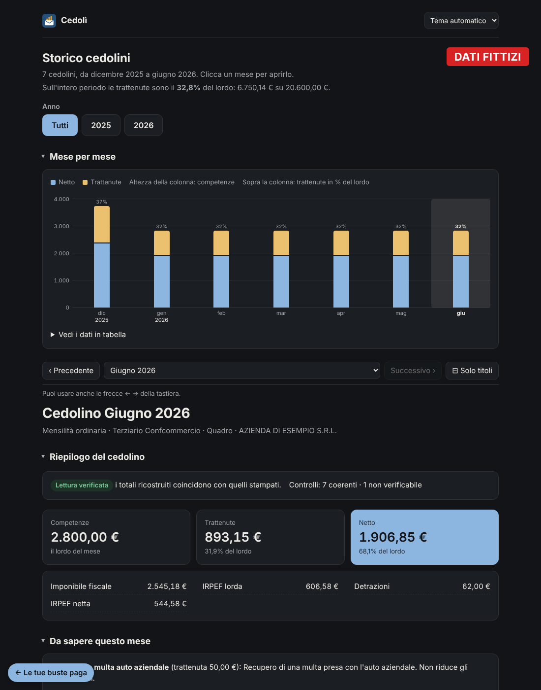

1. Trascini i PDF
Quelli che scarichi dal portale dell'azienda, uno o molti insieme, in qualsiasi ordine. I doppioni vengono riconosciuti e ignorati, e ogni cedolino mostra subito competenze, netto ed esito dei controlli.
Trascini il PDF del cedolino e Cedolì ti dice cosa vuol dire ogni voce, controlla che i conti tornino e tiene lo storico mese dopo mese. Nessun dato esce dal PC.
Versione 0.9.0 · zip di circa 38 MB · anche per Linux e macOS


La busta paga è piena di sigle e numeri. Cedolì la legge come farebbe un collega paziente e te la racconta in italiano semplice.
Retribuzione, contributi, IRPEF, detrazioni, addizionali, TFR, ferie e permessi, con un nome comprensibile e due righe di spiegazione.
Ricostruisce il passaggio dal lordo al netto e ricalcola contributi, IRPEF e detrazione con le regole dell'anno.
Quando un numero non torna lo mette in evidenza, con la differenza in euro e cosa domandare all'ufficio del personale.
Netto e trattenute mese per mese, tredicesima e quattordicesima comprese, e le voci che spiegano cosa è cambiato rispetto al mese prima.
Salvi lo storico in un'unica pagina da aprire senza l'app, da un altro computer, da un NAS o dal telefono.
Tema chiaro e scuro, che segue il sistema o si sceglie dal menu.
Si apre nel browser, ma la pagina la serve il tuo computer: non c'è nessun sito dietro.
Quelli che scarichi dal portale dell'azienda, uno o molti insieme, in qualsiasi ordine. I doppioni vengono riconosciuti e ignorati, e ogni cedolino mostra subito competenze, netto ed esito dei controlli.


Riepilogo, le cose da sapere di questo mese (bonus, conguagli, rimborsi), il passaggio dal lordo al netto, i controlli di coerenza con formula e valori, e tutte le voci spiegate.
Il grafico di netto e trattenute, il filtro per anno e, per ogni mese, cosa è cambiato. Quando arriva il cedolino nuovo lo trascini e lo storico si aggiorna da solo.


Una busta paga dice quanto guadagni, dove lavori e dove vivi. Per questo Cedolì è fatta per non avere bisogno di Internet, e non chiede di fidarsi sulla parola.
127.0.0.1) e non è raggiungibile da altri.Bastano cinque minuti: usala con il Wi-Fi spento, bloccala nel firewall di Windows, guarda le sue connessioni con Monitoraggio risorse. Funziona uguale.
Il codice è pubblico e si può leggere, e ogni modifica passa da test automatici che falliscono se l'app prova a usare la rete.
Versione 0.9.0 del 01/11/2026 · nessuna installazione e nessun permesso di amministratore.
Cedoli.exe. La prima volta Windows può mostrare "Windows ha protetto il PC": clicca Ulteriori informazioni e poi Esegui comunque. L'avviso compare perché il programma non è firmato da un editore registrato.Quando esce una versione nuova sostituisci Cedoli.exe: i cedolini già caricati restano. Il numero della versione in uso è scritto in fondo all'app.
Serve uv.
uv tool install git+https://github.com/FabioCuccaro/cedoli.git
bp appImpronta SHA-256 dello zip: 9eceba9df5ae92e5680b66c04a911fc5743544bc6ed3b6d485c44a8afa677296
In PowerShell, nella cartella Download: Get-FileHash Cedoli-windows.zip. Il risultato deve essere identico.
Oggi Cedolì legge i cedolini "Libro unico del lavoro" prodotti da Zucchetti, con le regole fiscali dal 2023 al 2026.
| Formato | Cosa legge |
|---|---|
| Zucchetti PAYLUL01 | Mensilità ordinarie, tredicesima, conguaglio di fine anno, cedolini su più pagine, assunzione a metà anno. |
| Zucchetti HR1LULDIP | Mensilità ordinarie, tredicesima e quattordicesima, cedolini aggiuntivi per premi, conguaglio di fine anno e di cessazione. |
| Contratti | Terziario (con quattordicesima a giugno) e metalmeccanici. Con un altro contratto l'app lo dice e conta solo la tredicesima. |
L'app te lo dice e ti mostra almeno competenze, trattenute e netto. Puoi aiutare ad aggiungerlo senza condividere il cedolino: l'app prepara una struttura anonima del PDF, dove ogni cifra diventa 9 e ogni nome diventa X. La controlli tu e la mandi tu, con una segnalazione su GitHub oppure per email a bustachiara.segnalazioni@proton.me.
Cedolì è gratuita e lo resta, senza pubblicità e senza versioni a pagamento. Se ti è utile puoi offrire un caffè: aiuta ad aggiornare le regole fiscali ogni anno e ad aggiungere nuovi formati.
La donazione è volontaria e passa da Ko-fi. Non sblocca nulla: l'app è la stessa per tutti.